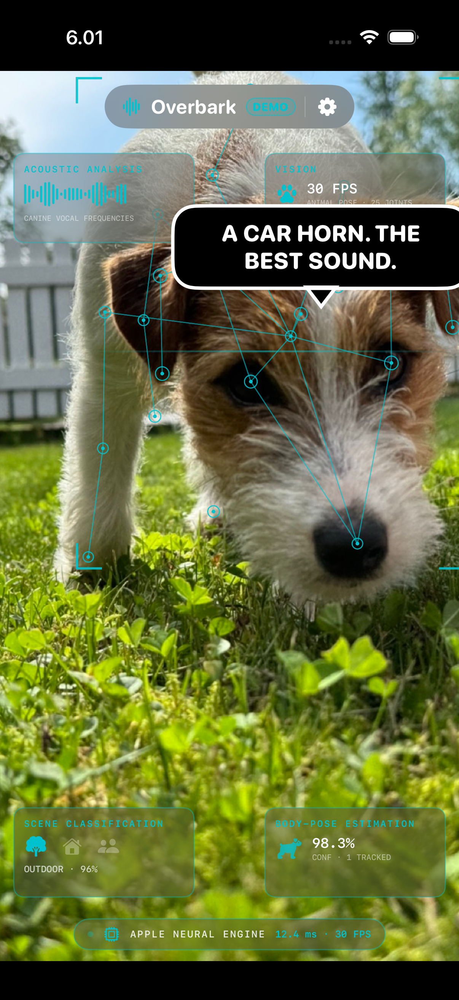
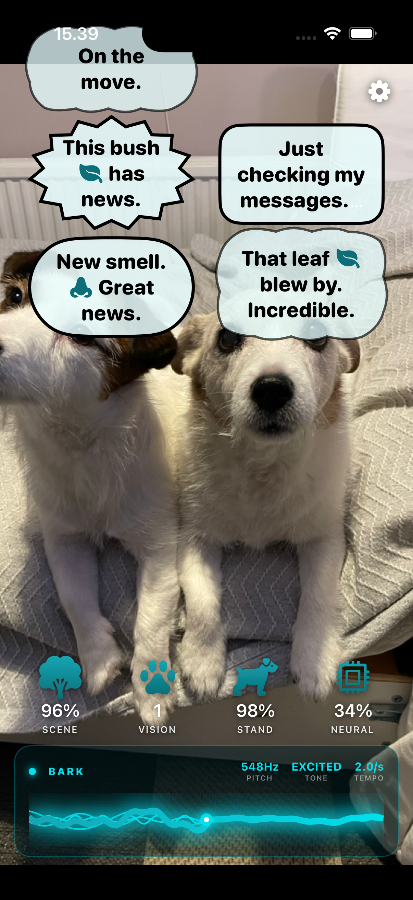
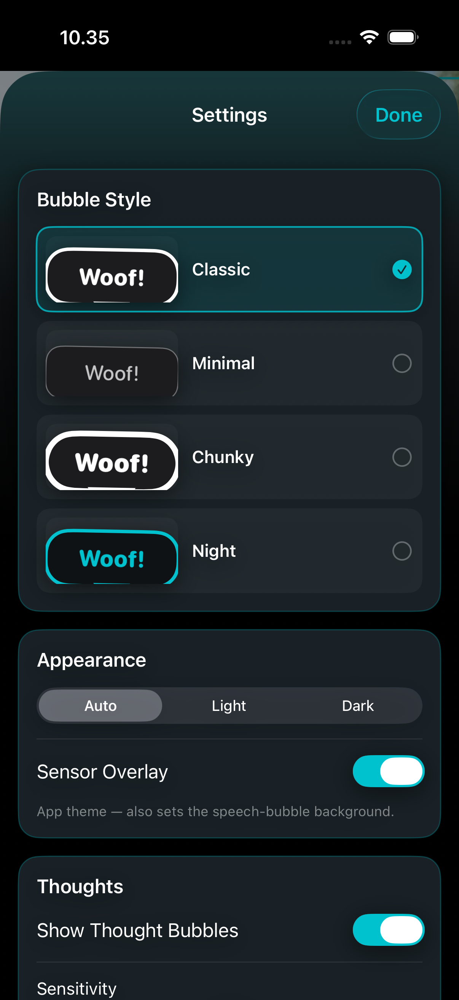

Your dog, subtitled.
Real bark acoustics and body-pose tracking, rendered as comic speech bubbles that stack into a running transcript. On-device, private, and — we cannot stress this enough — not a joke about the engineering.
Request beta accessIn TestFlight beta, ahead of its App Store release.



Overbark listens to a dog's bark the way bioacoustics researchers do — measuring pitch, tonality, and tempo against a body of peer-reviewed animal-communication research — and watches its posture the way an ethologist would, using on-device machine vision. Then it floats comic speech bubbles into a self-clearing stack beside the dog — newest at the bottom, older ones drifting up and off — and tells you what the moment sounds like. The apparatus is real. The transcript is between you and your dog.
Overbark collects nothing — and never will.
No account, no analytics, no ads, no tracking, no third-party SDKs. Nothing about you, your voice, your dog, or your home ever leaves the phone.
Serious instruments. Unserious conclusions.
Bark acoustics, properly measured
Each bark is isolated by Apple's Sound Analysis classifier, then scored with Accelerate/vDSP on pitch, tonality, and inter-bark tempo — the dimensions the peer-reviewed literature ties to emotional content. A live on-device FFT soundwave runs along the bottom deck, with a gain control, and lights up with each bark's pitch, tonality, and tempo — even when the dog is out of frame.
Posture, not just noise
Apple's on-device Vision-framework body-pose model tracks the dog across frames, not a single still — so the reading is never audio alone. What the engine does with that is proprietary; that it reacts to the whole dog is the point.
Scene-aware, sound-aware
The same on-device classifier that isolates the bark reads the wider scene, object detection takes in the surroundings, and an ambient-sound classifier stands watch over roughly seventeen everyday sounds — doorbell, siren, thunder, another dog, and more. So the bubble is shaped by the moment, not a dice roll. Exactly how is a trade secret. A well-instrumented one.
Two dogs, one conversation
Point the camera at two dogs and Overbark tracks and reads both — each gets its own side-by-side column of bubbles, and they talk to each other: one hears a car, the other insists it was the wind; one declares the passing bird a crow, the other, a harmless sparrow. Less a caption, more a transcript of a dispute. And when only one of your dogs is in frame, it wonders aloud where the other one got to — by name.
A transcript, not a caption
Barks and quiet thoughts arrive as distinct comic speech bubbles — shapes vary, thoughts set apart from barks — riding a self-clearing conveyor: newest lands at the bottom, older ones rise and fade as the moment moves on. Drag the stack to set where it sits, and it stays there. Choose a bubble style and one of seven harmonized color themes, in light or dark.
A dog's-eye view, entirely on the phone
A compact telemetry deck reports four reads in real time — mindset, insights, presence, and vocal — showing the pipeline working as it works. Audio analysis, pose tracking, scene detection, and the bubbles themselves all run on-device. No account, no server, no cloud model, no data leaving the phone. iPhone and iPad, portrait or landscape.
A monologue that fits the moment
The bubbles aren't a bag of random one-liners. What the dog "says" is shaped by where it is and what's happening — and the writing leans into it. On a walk it reads the pavement like a newspaper: checking the pee-mail, filing complaints about a rival's scent, waiting at the kerb while "a great river of metal" roars past. Stop moving and it investigates whatever's there — a sniff, a passing dog, a person. At the beach the deadpan cracks into pure joy — the sea as enormous friend-and-foe, the zoomies, drinking a bit of the ocean "for science." A bird overhead reignites the eternal war (small ones are friends; big ones are sky-mafia to be repelled from the yard). And when the dog is resting — curled on a lap, dozing — it turns quiet and tender: keeping watch while you sleep, remembering the shelter, the best trade it ever made. Hundreds of lines, situational, in character.
The science is real
Overbark's tone model is grounded in peer-reviewed bioacoustics research, built from analysis of thousands of dog barks across many real-world contexts. The finding, stated plainly: pitch is the dominant cue humans use to read a bark's emotional tenor, with tonality and inter-bark tempo as supporting signals — and it holds across cultures, ages, and dog ownership. Overbark computes the same features from the live microphone feed and scores them the same way. That tells us how a bark is likely to be heard. It does not tell us what the dog intended. Sounds like something. We report, you decide.
Nothing leaves your phone
Camera, microphone, and (if you switch it on) speech recognition are used only on your device, in the moment. Nothing is recorded, stored, or sent anywhere. No account, no tracking, nothing to collect — like every McFin app. Read the privacy policy →
A note on methodology
Overbark is built on real acoustic research and real on-device machine vision. It is also, functionally, a very well-instrumented guessing machine pointed at an animal that cannot confirm or deny anything it is reported to have said. We stand behind the engineering. We make no claims about the dog.
How to read the instruments
Overbark keeps the camera view clear on purpose — the readouts live in one bottom deck. Four tiles report what the dog is up to right now — its mindset, its insights, who's present, and its vocal read — and the soundwave underneath is what it's hearing. Nothing here is decorative; every glyph reflects the dog in the moment.
MINDSET
The little world the dog thinks it's in right now — yard patrol, dinner countdown, nap, guard duty. The tile only lights up once the dog has actually settled on a read; mid-transition, it dims rather than fake one.
INSIGHTS
Whatever just grabbed the dog's attention — something it saw, or something it heard. A rival dog, a ball, a doorbell. Grays out the second nothing's pulling focus; it never invents a thing to stare at.
PRESENCE
A headcount of who's actually here right now. Just the dog, the dog plus one, or the whole pack assembled — the dog's entire audience, in one glance.
VOCAL
What the dog is putting out into the world, and the mood riding on top of it. Quiet by default — a level, grey glyph and a "—". The instant a bark lands, the tile names its tone, holds for a beat, then settles back down.
The soundwave underneath
Underneath the tiles, a live waveform runs continuously off the microphone — several thin colored strands, each riding its own real FFT frequency band, plus one thick "sum" wave riding on top. It's always moving; it does not wait for a bark.
Its label carries a percentage — the microphone's gain (sensitivity), set by dragging anywhere along the wave; a small glowing dot marks the current gain thumb. It is a sensitivity dial, not a volume meter.
On a detected bark: Pitch · Tonality · Tempo
The moment a bark is isolated, the header swaps to a pulsing dot and "BARK", and three live readouts appear:
At the same moment, the wave itself brightens, thickens, and quickens — a visible "hot" state that fades back to the calm gain read a beat later. This is the same BROADCAST tile reading above, shown at full resolution.
Repositioning the bubble stack
The speech bubbles aren't fixed in place. Drag the newest bubble — the one currently at the bottom of the stack — up or down, and the whole conversation follows: older bubbles rise above it and clear off on their own once the dog goes quiet. You're setting the anchor point for where new lines appear, not scrolling back through old ones — Overbark doesn't keep a transcript on screen, it keeps a conversation.
Find out what the dog is on about.
Overbark is in TestFlight beta ahead of its App Store release. Ask for early access, or just follow along.
Request beta access